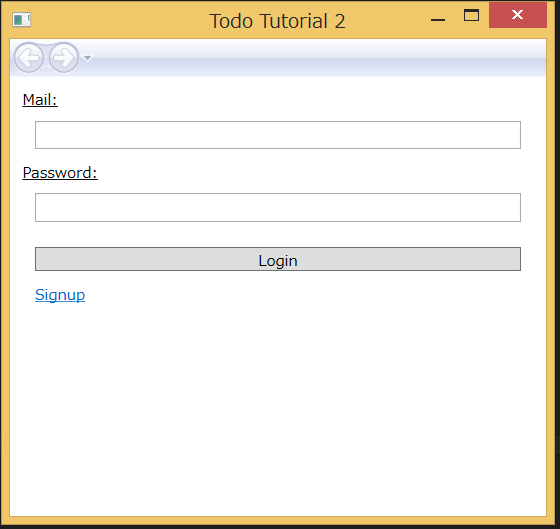
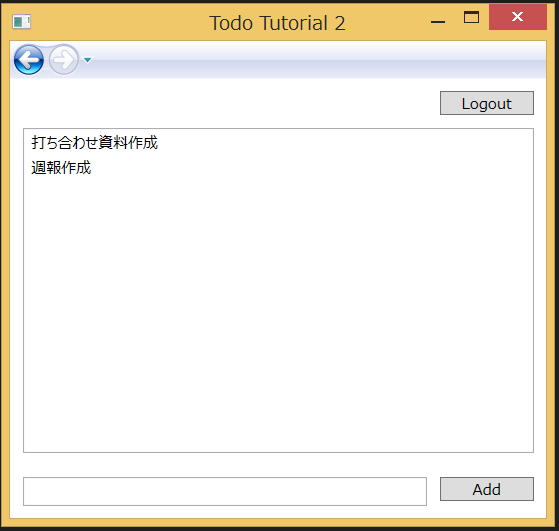

4. チュートリアル2 : ログイン機能とアクセス制御¶
チュートリアル2では、チュートリアル1の Todo アプリにユーザ登録・ログイン機能を追加します。
{kind=link}
チュートリアル1ではデータを全員で共有していましたが、 チュートリアル2ではユーザごとにデータを管理するようにします。
4.1. サンプルの実行¶
チュートリアル1と同じように、デベロッパコンソールからアプリケーションを新たに作成し、サンプルコードの変更を行ってください。
また、デベロッパコンソールから、オブジェクトバケットを作成します。 バケット名は “TodoTutorial2” としてください。 なお、ACL はデフォルトのまま (認証ユーザのみ読み書き可能)で構いません。
アプリを起動すると、ログイン画面が表示されます。 最初に画面下部の Signup ボタンを押してサインアップ画面に遷移して下さい。 E-mail アドレスとパスワード(8文字以上)を入力してサインアップします。
サインアップが完了したらログインを行って下さい。 チュートリアル1と同様のアプリ画面が表示されます。 Todo を作成した後、画面上部の Logout を押下しログアウトしてください。
{kind=link}
ログイン画面に戻りますので、今度は違うユーザ名でサインアップを行い、ログインしてみてください。 先ほど作成した Todo が、現在のユーザからは見えなくなっていることを確認してください。
4.2. アクセス制御¶
4.2.1. Todo のアクセス制御¶
データの保存処理はチュートリアル1同様 SaveAsync() で行っています。
ただし、ログイン中のユーザのみがアクセス可能となるように ACL 設定を行っています。
public async void Add(string text)
{
var obj = _bucket.NewObject();
// 現在のユーザのみアクセス可能とする
obj.Acl = NbAcl.CreateAclForUser(NbUser.CurrentUser());
obj["description"] = text;
var result = await obj.SaveAsync();
Reload();
}
これにより、以下の ACL が設定されます。
{
owner: "オーナのユーザID",
r: ["オーナのユーザID"],
w: ["オーナのユーザID"],
c: [],
u: [],
d: [],
admin: ["オーナのユーザID"]
}
このため、他のユーザが作成したデータは、同一のバケットに入っていても参照および変更ができません。
なお、チュートリアル１のように未ログイン状態でデータを作成した場合は、 以下のように誰でも読み書き可能な ACL が自動的に設定されます。
{
r: ["g:anonymous"],
w: ["g:anonymous"],
c: [],
u: [],
d: [],
admin: []
}